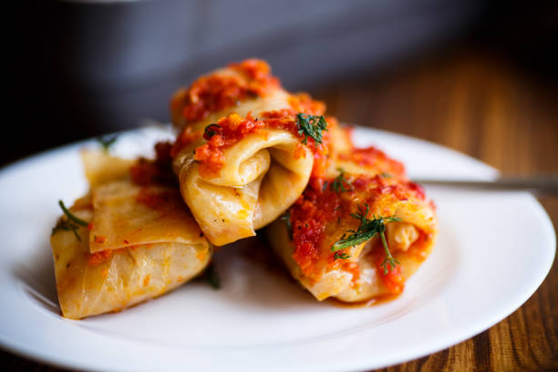

Manicotti Recipe

Delicious! Serve with a crispy salad and garlic bread, and you'll have a dish your family will love! The kids
like to help stuff the noodles too!
Ingredients
- 1 pint part-skim ricotta cheese
- 8 ounces shredded mozzarella cheese
- ¾ cup grated Parmesan cheese
- 2 eggs
- 1 teaspoon dried parsley
- salt to taste
- ground black pepper to taste
- 1 (16 ounce) jar spaghetti sauce
- 5 ½ ounces manicotti pasta
Steps
- Cook manicotti in boiling water until done. Drain, and rinse with cold water.
- Preheat oven to 350 degrees F (175 degrees C).
- In a large bowl, combine ricotta, mozzarella, and 1/2 cup Parmesan, eggs, parsley, and salt and pepper.
Mix well.
-
Pour 1/2 cup sauce into an 11x17 inch baking dish. Fill each manicotti shell with 3 tablespoons cheese
mixture, and arrange over sauce . Pour remaining sauce over top, and sprinkle with remaining Parmesan
cheese.
- Bake 45 minutes, or until bubbly.
Back to Homepage